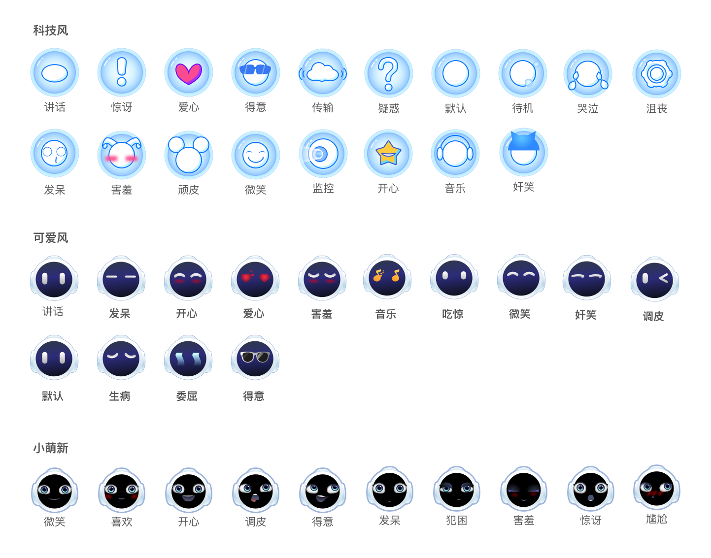

表情服务
表情服务提供 API 调用设备“表情”的能力。作为表情服务访问代理的 EmotionManager 对象， 提供了表情服务的主要 API，可通过 RobotContext 对象获取到。
EmotionManager emotionManager = aRobotContext.getSystemService(EmotionManager.SERVICE);
展示表情
当需要设备像人类一样展示“喜”、“怒”、“哀”、“乐”等表情，通过展示表情即可实现。
promise /* [2] */ = emotionManager.express(Uri.parse("emotion://va/happy") /* [1] */) .progress(new ProgressCallback<ExpressingProgress>() { @Override public void onProgress(ExpressingProgress expressingProgress /* [3] */) { // 表情展示过程会多次运行至此 } }) .done(new DoneCallback<Void>() { @Override public void onDone(Void aVoid) { // 表情展示完毕会运行至此 } }) .fail(new FailCallback<EmotionException>() { @Override public void onFail(EmotionException e) { // 表情展示失败会运行至此 } });
[1] 要展示的表情的唯一标识。
[2] 返回等待展示进度与结果的异步对象，通过该对象可等待或监听进度与结果以及取消展示过程。具体用法参考 Promise。
[3] 异步回调的 ExpressingProgress 对象描述了表情展示的进度信息，具体包括：
| 属性 getter | 说明 |
|---|---|
| ExpressingProgress.progress | 进度信息began：展示开始 ended：展示结束 |
通过指定选项，可调整表情展示的行为。
ExpressingOption /* [1] */ option = new ExpressingOption.Builder( Uri.parse("emotion://va/happy")).build(); promise = emotionManager.express(option);
[1] ExpressingOption 对象通过 ExpressingOption.Builder 构建，使用说明如下：
| 方法 | 说明 | 默认值 |
|---|---|---|
| Builder.constructor(uri) | 构造时必须传入要展示的表情的 uri | |
| Builder.setSticky(sticky) | 展示过程是否允许被打断true : 不能被打断 |
false |
| Builder.setLoops(loops) | 循环展示的次数 0 : 无限次 |
0 |
| Builder.setExtension(extension) | 自定义参数 | JsonObjectString.EMPTY_OBJECT |
如果需要设备像人类一样一会哭一会笑，可指定多个选项。
ExpressingOption option1 = new ExpressingOption.Builder( Uri.parse("emotion://va/cry")).build(); ExpressingOption option2 = new ExpressingOption.Builder( Uri.parse("emotion://va/happy")).build(); promise = emotionManager.expressSerially(option1, option2 /* [1] */);
[1] 依次展示的表情的集合，也可写成如下方式：
List<ExpressingOption> optionList = new ArrayList<>(); optionList.add(option1); optionList.add(option2); promise = emotionManager.expressSerially(optionList);
如果想知道当前展示的表情，可通过如下代码实现。
emotionManager.getExpressing();
返回表情的唯一标识。
如果想知道当前有无表情在展示，可通过如下代码实现。
emotionManager.isExpressing();
返回 true 表示有表情在展示。
关闭表情
当需要设备恢复正常的交互界面，不再展示表情时，通过以下代码实现。
emotionManager.dismiss();
表情列表
科技风
| 中文名称 | id |
|---|---|
| 发呆 | techface_daze |
| 欢呼 | techface_smile |
| 开心 | techface_happy |
| 爱心 | techface_love |
| 害羞 | techface_shy |
| 音乐 | techface_music |
| 说话 | techface_speak |
| 故障 | techface_upset |
| 吃惊 | techface_amazing |
| 调皮 | techface_naughty |
| 奸笑 | techface_grin |
| 委屈 | techface_wronged |
| 得意 | techface_proud |
| 默认 | techface_default |
| 数据 | techface_data |
| 监控 | techface_monitor |
| 待机 | techface_standby |
| 疑问 | techface_doubt |
可爱风
| 中文名陈 | id |
|---|---|
| 发呆 | face_daze |
| 开心 | face_happy |
| 爱心 | face_love |
| 害羞 | face_shy |
| 音乐 | face_music |
| 说话 | face_speak |
| 生病 | face_upset |
| 吃惊 | face_amazing |
| 调皮 | face_naughty |
| 奸笑 | face_grin |
| 委屈 | face_wronged |
| 得意 | face_proud |
| 微笑 | face_smile |
| 默认 | face_default |
小萌星
| 中文名称 | id |
|---|---|
| 得意 | littlestar_proud |
| 发呆 | littlestar_daze |
| 犯困 | littlestar_sleepy |
| 尴尬 | littlestar_embarrassed |
| 害羞 | littlestar_shy |
| 惊讶 | littlestar_amazing |
| 开心 | littlestar_happy |
| 调皮 | littlestar_naughty |
| 微笑 | littlestar_smile |
| 喜欢 | littlestar_love |
表情图片
